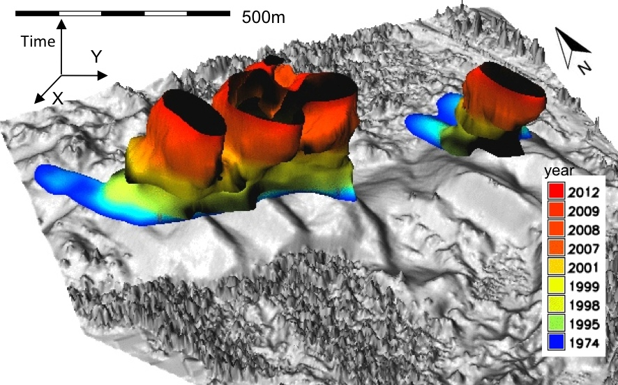

<section data-background="img/jr_anim.gif">
    <h2>Jockey’s Ridge dune</h2>
</section>
<section>
    <h2>Isosurface of a countour</h2>
    <h3>Jockey’s Ridge dune</h3>
    <!--<ul>
        <li>understandable but not analytical</li>
    </ul>-->
    
</section>
<section>
    <h2>Animation</h2>
    <h3>Jockey’s Ridge dune</h3>
    
</section>
<section>
    <h2>Transects</h2>
    
</section>
